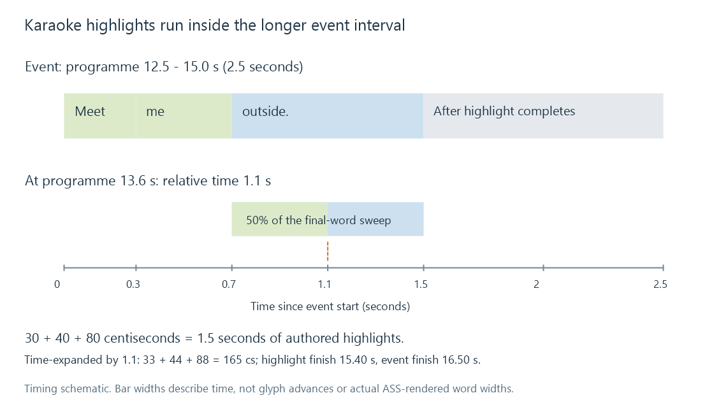

Karaoke subtitle timing
Karaoke subtitle timing controls changes within a displayed line, using syllable durations and highlight behavior relative to its event interval.
Karaoke timing changes the appearance of parts of a subtitle line while the line remains displayed. The timing usually corresponds to syllables or other authored units of speech/music.
The word “karaoke” does not imply that a subtitle engine discovered the syllables automatically. The resource contains authored timing instructions, and the renderer evaluates them within the event.
ASS durations accumulate within the event
Consider an original ASS event starting at 12.5 seconds and ending at 15 seconds. Its text excerpt is:
{\k30}Meet {\k40}me {\kf80}outside.
The \k family uses centiseconds: 100 units = one second. The tags in this example specify 0.3, 0.4 and 0.8 seconds.
Without an explicit alternative start instruction, each tagged unit begins after the preceding units' durations:
| Unit | Relative interval | Programme interval |
|---|---|---|
| Meet | 0.0–0.3 s | 12.5–12.8 s |
| me | 0.3–0.7 s | 12.8–13.2 s |
| outside. | 0.7–1.5 s | 13.2–14.0 s |
The total authored highlight sequence is 1.5 seconds. The whole event lasts 2.5, leaving another second after those highlights have completed.

This is an invented timing example, not an analysis of a recording.
Step and sweep have different visual behavior
| Tag | Behavior in the documented ASS model |
|---|---|
\k |
A unit changes from secondary to primary fill when its highlight interval starts |
\kf or \K |
Fill sweeps from secondary to primary from left to right over the unit's duration |
\ko |
Step-like fill behavior, with the pre-highlight outline treated differently |
For the final word's 0.8-second sweep, programme time 13.6 is 0.4 seconds after its start at 13.2. In the ideal linear sweep, it is 50% through that word's sweep.
That percentage refers to the progression across the rendered unit. It is not a claim that half its Unicode code points have independent highlight times. Shaping and glyph widths determine the visual surface being swept.
The tag names are case-sensitive: uppercase \K and lowercase \k describe different behavior.
Cue timing and internal timing are separate quantities
ASS event timestamps commonly use hundredths of a second. Karaoke durations use centiseconds too, but describe relative lengths. Motion and several other override arguments use milliseconds. Similar-looking numbers can therefore have different roles or units.
Moving the whole event by a constant +0.8-second offset moves the highlights with it; their relative durations need not change.
A rate transformation is different. Extending only the event's end leaves the original internal highlights running at their original relative pace.
A 1.1× time expansion
Suppose the entire presentation is retimed by new time = 1.1 × old time. The event becomes 13.75–16.5 seconds, and its internal durations should become:
| Original tag duration | Expanded duration | New unit interval |
|---|---|---|
| 30 cs | 33 cs | 13.75–14.08 s |
| 40 cs | 44 cs | 14.08–14.52 s |
| 80 cs | 88 cs | 14.52–15.40 s |
The completed highlight sequence now lasts 1.65 seconds, followed by 1.1 seconds of the event's remaining display time.
Keeping 30/40/80 would finish the highlight sequence at 15.25 seconds, rather than 15.40. The outer event would have the new lifetime while its internal presentation had the old rate.
A real conversion also needs a rounding policy when scaled durations are not whole centiseconds. Its cumulative result should be compared with the intended anchors rather than rounding each unit without inspecting the total.
The renderer needs the instructions, not just the sentence
WebVTT has its own timed-text and past/future cue mechanisms; that is another presentation model rather than a literal interpretation of ASS tags. Converting the example to simple SRT can retain “Meet me outside.” and the overall interval without retaining the authored highlight sequence.
For an Emby route using styled karaoke subtitles, the consumer must receive the supported event instructions and resources. A plain-text caption of the same words does not establish that the internal timing survived.
See Also
- Advanced SubStation Alpha subtitles (ASS)
- Subtitle timing drift
- Subtitle format conversion
- Unicode in subtitles